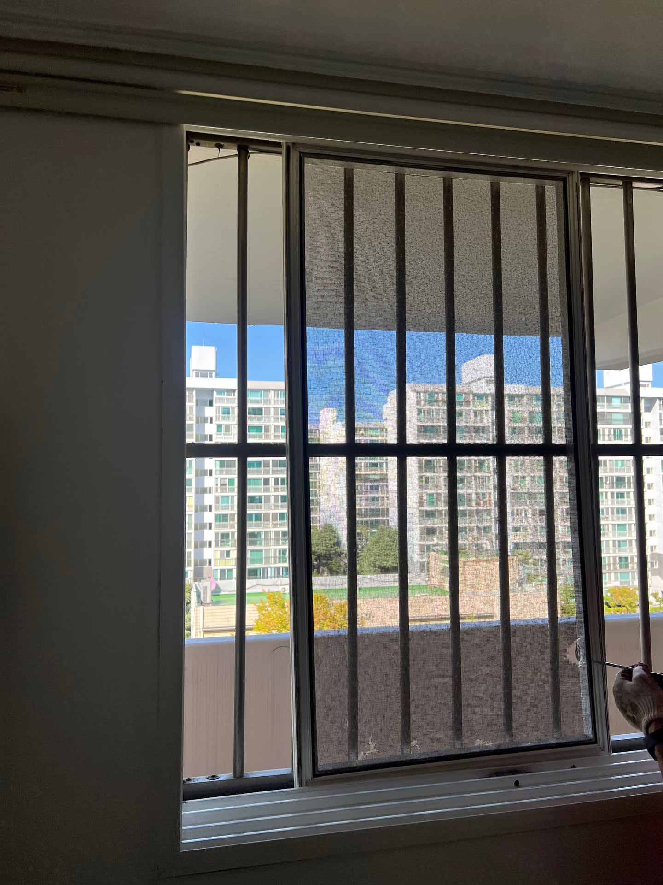
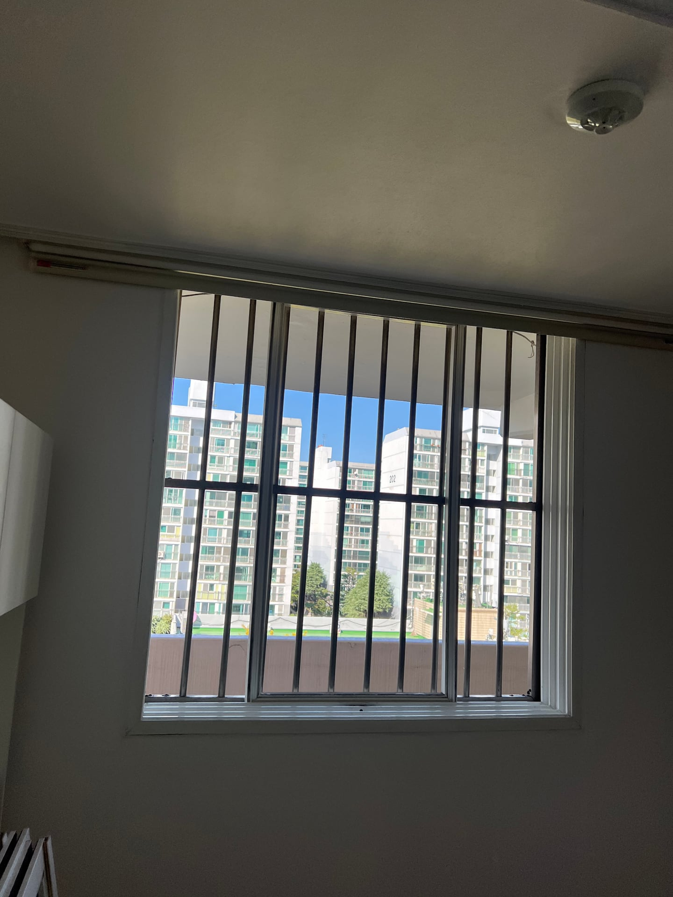
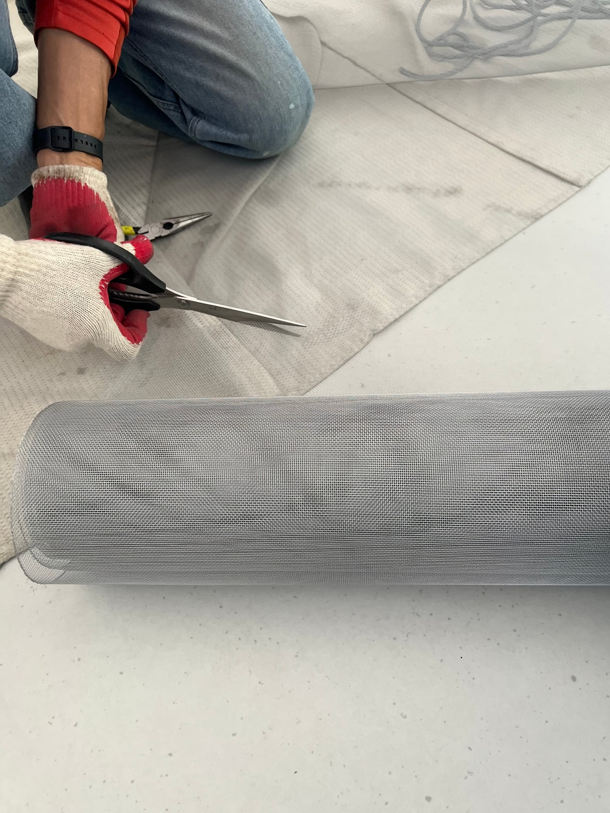
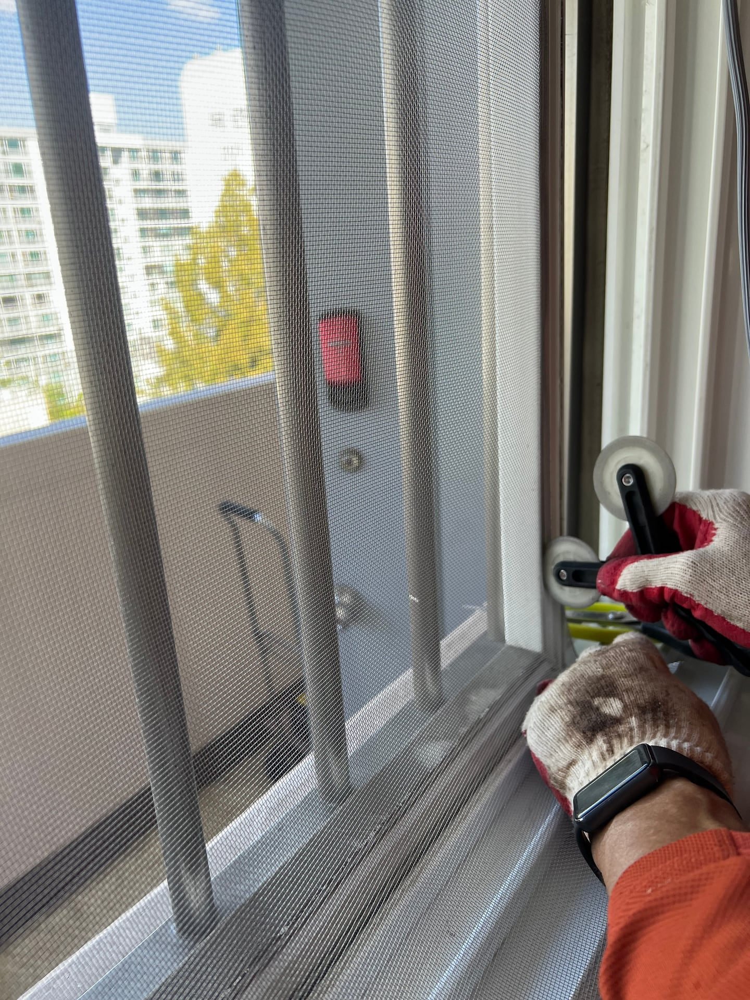
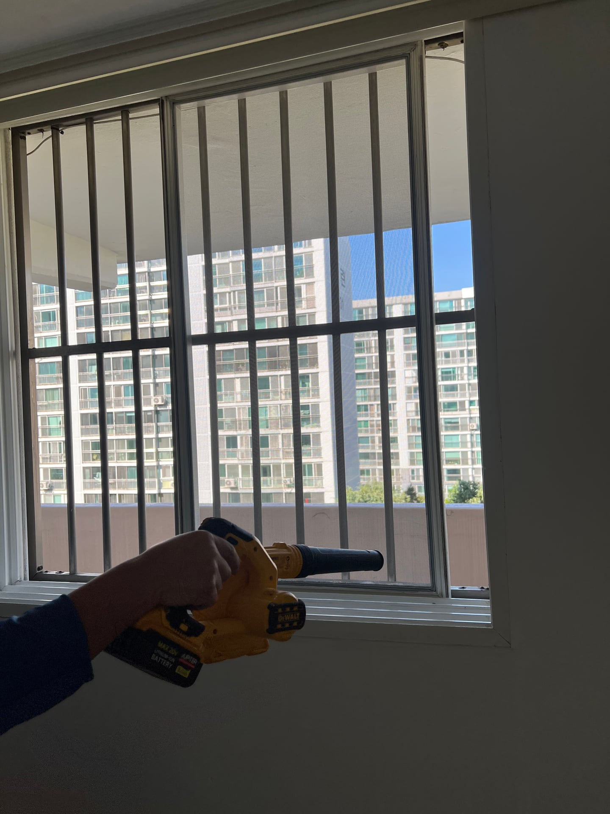

대전 탄방동 한가람아파트 방충망 교체｜기존 틀에 알루미늄 망을 새로 시공

현장 작업 한눈에 보기
- 현장
- 대전 탄방동 · 한가람아파트 창문
- 문제
- 기존 망 하단·가장자리 훼손
- 작업
- 알루미늄 망 재단·틀 홈 고정
창틀 주변 청소·재설치 - 결과
- 새 망을 설치한 전체 모습
창호 전체 교체와 구분
대전 탄방동 한가람아파트에서 찢어진 방충망을 알루미늄 망으로 교체했습니다. 기존 망 확인부터 분리, 새 망 재단·고정, 창틀 주변 청소와 재설치까지 실제 작업 사진 6장으로 소개합니다.
1. 먼저 낡은 망의 상태를 살폈습니다
창문을 열어 두고 싶은데 방충망에 구멍이 보이면 신경이 쓰이죠. 이번에는 대전 탄방동 한가람아파트에서 알루미늄 방충망 교체를 진행했습니다. 10월 6일 실제 작업 사진을 순서대로 소개합니다.
첫 사진을 보면 망 하단과 오른쪽 가장자리에 찢어진 부분이 보입니다. 이번 공사는 창호 전체를 바꾸는 일이 아니라, 기존 방충망 틀에 새 망을 넣는 부분 인테리어 작업입니다.

2. 작업할 방충망을 분리했습니다
방충망을 분리한 창문 자리입니다. 앞 사진과 비교하면 망이 있던 위치와 창틀 구성을 볼 수 있습니다. 새 망 작업은 이 기존 틀을 이용해 진행했습니다.
창밖에 보이는 세로 금속 구조물은 방충망과 별개입니다. 사진에서 달라지는 부분은 그 뒤의 구조물이 아니라, 창문에 끼워지는 망입니다. 전후 사진도 이 부분을 중심으로 비교해 주세요.

3. 새 알루미늄 망을 틀에 맞춰 재단했습니다
새 알루미늄 망을 펼치고 가위로 재단하는 모습입니다. 롤 상태의 망을 필요한 크기로 나눈 뒤, 틀에 고정할 수 있도록 준비했습니다.
이 단계는 완성된 방충망을 끼우는 사진과 다릅니다. 재료를 잘라 준비하는 과정이며, 다음 사진에서는 준비한 망을 틀 홈에 눌러 고정하는 작업이 이어집니다.

4. 틀 홈을 따라 망을 눌러 고정했습니다
재단한 망을 틀에 올리고 롤러 공구로 가장자리를 눌러 넣었습니다. 가까이 찍은 사진에서 망의 짜임과 오른쪽 틀 홈을 따라 작업하는 손을 볼 수 있습니다.
가운데 넓은 면을 채우는 것만으로 끝나는 작업은 아닙니다. 틀 가장자리까지 망을 고정하는 과정이 이어집니다. 이번 사진은 이 부분을 가까이 남겨, 새 망을 어떻게 넣었는지 보여줍니다.

5. 창틀 주변을 정리했습니다
망 교체 후에는 창틀 하부 주변을 송풍기로 정리했습니다. 새 망이 들어간 틀과 하부 레일을 함께 담았습니다. 망을 넣는 작업에 이어 창문 주변을 정리하는 단계입니다.
창호 부속이나 레일을 새로 교체한 공사는 아닙니다. 이번 작업은 알루미늄 망 교체와 주변 청소이며, 기존 창호 전체를 교체하는 공사와는 범위가 다릅니다.

6. 새 망을 설치한 전체 모습입니다
마지막은 새 알루미늄 망을 창문 자리에 설치한 모습입니다. 첫 사진의 찢어진 망과 비교하면 새 망이 틀 안에 들어간 상태를 확인할 수 있습니다. 기존 창틀과 외부 금속 구조물은 그대로 남아 있습니다.
사용 중에는 망을 손으로 세게 누르기보다 가장자리와 찢어진 곳이 없는지 살펴봐 주세요. 방충망 교체가 필요하다면 창문 전체 사진과 손상 부위를 함께 보내 주시면 상담할 범위를 잡는 데 도움이 됩니다.